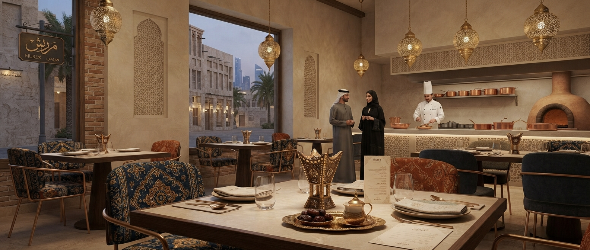

Restaurant مطعم
نموذج رقمي لتقديم تجربة مطعم حديثة من خلال واجهة ويب متجاوبة تركز على سهولة الوصول إلى محتوى المطعم وتجربة المستخدم.

عن المشروع
تصور رقمي حديث لقطاع المطاعم
فكرة المشروع
تم تطوير مشروع Restaurant كنموذج رقمي يوضح إمكانية بناء واجهة ويب مخصصة لقطاع المطاعم، مع التركيز على تقديم المحتوى بطريقة واضحة وسهلة الاستخدام.
الهدف
يهدف المشروع إلى تقديم نموذج عملي لكيفية توظيف الويب في إنشاء حضور رقمي للمطاعم وإتاحة تجربة استخدام مناسبة لمختلف الأجهزة.
التحدي والحل
من الفكرة إلى تجربة رقمية واضحة
التحدي
إنشاء واجهة رقمية مناسبة لطبيعة قطاع المطاعم، بحيث تكون بسيطة وواضحة وقابلة للاستخدام عبر أجهزة الحاسب والهواتف الذكية.
الحل
تم بناء نموذج ويب يركز على تنظيم المحتوى وتقديمه ضمن واجهة حديثة ومتجاوبة، مع اعتماد بنية قابلة للتطوير مستقبلًا وفق احتياجات المشروع.
أبرز جوانب المشروع
عناصر ركزنا عليها أثناء تطوير النموذج
تصميم متجاوب
واجهة قابلة للتكيف مع أحجام الشاشات المختلفة.
واجهة حديثة
تصميم بصري مناسب للهوية الرقمية الحديثة لقطاع المطاعم.
تجربة استخدام واضحة
تنظيم المحتوى بطريقة تساعد الزائر على الوصول إلى المعلومات بسهولة.
بنية قابلة للتطوير
إمكانية تطوير النموذج مستقبلًا وإضافة وظائف رقمية حسب متطلبات المشروع.
حضور رقمي
نموذج يوضح إمكانيات إنشاء حضور رقمي احترافي لنشاط المطاعم.
نموذج تجريبي
مشروع تجريبي ضمن معرض أعمال CyberPath Digital لإظهار الإمكانيات التقنية والتصميمية.
التقنيات
التقنيات المستخدمة في بناء الواجهة
استكشف مشروع Restaurant
شاهد النموذج الرقمي للمشروع واستكشف تجربة الواجهة مباشرة.